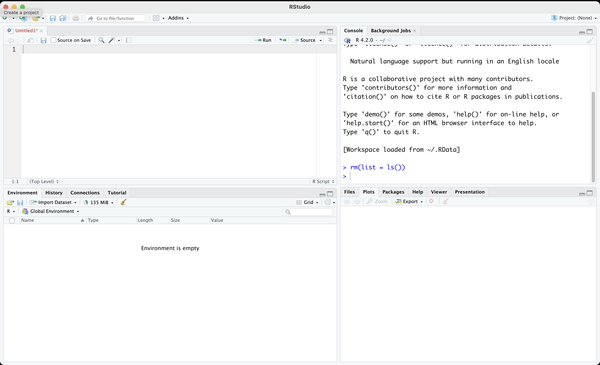
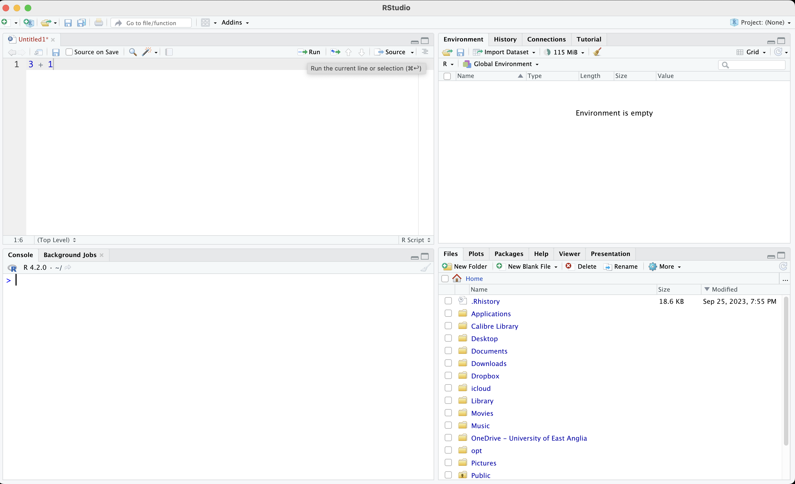

R Basics
R is a free software environment for statistical computing and graphics. It is an extremely powerful tool that we will use for data analysis and visualisations.
R Studio is a customization of R. It runs R in the background and comes up with some additional features such as a very nice text editor.
R Studio has four panes:
- Console
- Text editor to work on R scripts
- Environment window
- Plot display
As default, the bottom left pane shows the console. This is where you can type your commands to R. However, we will discourage directly typing into the console. Instead, we will use the text editor, which is located above the console pane. This is where we will type our commands (and also comments). We will then run our code from the text editor. This will allow us to track what we have done. We can easily edit the code if we made a mistake. We can also save the commands for future use.
The upper right pane usually shows the environment by default. This is where our objects such as our data will be shown.
Your environment would not include anything when you first open R Studio. It is the case because we have not imported any data or created any objects.
Finally, the lower right pane displays files/folders, plots (that we will prepare) and help files. We will discuss this pane more in the future.
Objectives for Week 1
- Use R as a calculator
- Write and execute a command by using R Studio text editor
- Save your script
- Use the assignment operator to create objects
- Understand the difference between ‘string’ and ‘numerical’
- Create a simple dataset
Use R as a calculator
Go to the console pane and type a simple calculation.
1 + 3
Output: [1] 4As you can see, the output for 1 + 3 is 4, which is correct. We directly did a calculation using the console.
It would work but it is not a good approach. Do not write your code directly to the console. Instead, go to the top left pane and write your ‘code’ into the text editor. The calculation 1 + 3 here is your code.

- Save your script by file >> save OR simply by ctrl/cmd + S
Assignment operator to create objects
We can create ‘objects’ in R which store our data. For example, you would like to calculate your age. Current year (i.e., 2023) - your birth year gives your age.
Let’s create an object which stores your year of birth. We are going to call it my_birth_year. Each R object must be one-word only, so I use “_” instead of space. We could also have used a dot or dash.
# This is a comment.
# Characters after a hashtag are considered as comments by R.
# They are not executed.
# Use comments extensively to take notes
# and to remind your future self of the work you did.
# "<-" is the assignment operator
# It basically symbolizes an arrow.
my_birth_year <- 1985Now the Environment should store an object called my_birth_year. When I run my_birth_year, R will display the information stored.
my_birth_year
Output: [1] 1985Note that R is case sensitive. If you misstype, such as “My_birth_year”, it will give you an error message.
My_birth_year
Output: Error in eval(expr, envir, enclos): object 'My_birth_year' not foundWe can find your age by subtracting current year from my_birth_year.
2023 - my_birth_year
Output: [1] 38We typed 2023 manually. We might want to create another object called current_year. Try to do it yourself first as an exercise.
Reveal the code
current_year <- 2023You can do operations using objects. For example, calculate your age using the objects current_year and my_birth_year. Store this in another object called my_age.
Reveal the code
my_age <- current_year - my_birth_year Check if you did correctly.
my_age
Output: [1] 38You can also write over an object.
current_year <- 2030
current_year
Output: [1] 2030This would not change outputs previously created using the older version of the objects.
my_age
Output: [1] 38Obviously, current yer is not 2030, so let’s correct it back.
current_year <- 2023Numerical and String objects
So far, we stored numerical data. We can also have textual information, such as name of a person, or type of a medicine.
Create an object called my_name and store your name there.
my_name <- "Baris"
my_name
Output: [1] "Baris"As you can see, R displays textual information within quotation (““). Any information stored or displayed within”” is called string and refers to text.
Create an object called my_name_last and store your name there.
Reveal the code
my_name_last <- "Ari"Obviously, you cannot make a calculation using words. For example, it is nonsensical to subtract two words. You cannot do any calculation with words.
my_name_last - my_name
Output: Error in my_name_last - my_name: non-numeric argument to binary operatorSometimes numerical information is stored as text. In that case, R will not consider it as a number.
For example, see three objects below.
num1 <- 10
num2 <- 100
num3 <- "1000"num1 and num2 are numerical values, but num3 is text. You cannot do any calculation with that.
num1
Output: [1] 10
num2
Output: [1] 100
num3
Output: [1] "1000"
num1 + num2
Output: [1] 110
num1 + num3
Output: Error in num1 + num3: non-numeric argument to binary operatorCreate a Simple Dataset
Imagine that we have the names and birth years of a number of people. We cannot really hold each piece of information in a separate object. We would like to store them altogether in a single object, like a spreadsheet.
Let’s start with names. We have five people:
- Rishi Sunak
- Liz Truss
- Boris Johnson
- Theresa May
- David Cameron
We can store their full names in a single object using the combine function (c).
names_pm <- c("Rishi Sunak",
"Liz Truss",
"Boris Johnson",
"Theresa May",
"David Cameron",
"Gordon Brown",
"Tony Blair")Note that each PMs name is written within quotation and they are combined together with the function c(). Each item within c() is separated with a comma. Let’s see the object:
names_pm
Output: [1] "Rishi Sunak" "Liz Truss" "Boris Johnson" "Theresa May"
Output: [5] "David Cameron" "Gordon Brown" "Tony Blair"Great! We have the names of the last five UK PMs.
You may have realized that there are numbers in squared brackets in the beginning of each line.
These numbers refer to the order in the sequence. For example, “Rishi Sunak” is the first item whereas “David Cameron” is the fifth.
You can recall a particular item in the object using square brackets. Let’s print the first item in names_pm.
names_pm[1]
Output: [1] "Rishi Sunak"Similarly, for the third item, you would use [3]:
names_pm[3]
Output: [1] "Boris Johnson"Find the fifth name in the object.
Reveal the code
names_pm[5]
Output: [1] "David Cameron"You can add more than one number into the square brackets using the c() function. For example, who are the second and fourth names?
names_pm[c(2,4)]
Output: [1] "Liz Truss" "Theresa May"Next, let’s write down their birth year. The order is important! You need to keep the same order with PMs.
birth_years <- c(1980, # Rishi Sunak
1975, # Liz Truss
1964, # Boris Johnson
1956, # Theresa May
1966, # David Cameron
1951, # Gordon Brown
1953 # Tony Blair)
)Check the object we just created.
birth_years
Output: [1] 1980 1975 1964 1956 1966 1951 1953Let’s put them together in a spreadsheet. What we would like to do is to vertically bind the two objects, which is called column bind and denoted with cbind.
cbind(names_pm, birth_years)
Output: names_pm birth_years
Output: [1,] "Rishi Sunak" "1980"
Output: [2,] "Liz Truss" "1975"
Output: [3,] "Boris Johnson" "1964"
Output: [4,] "Theresa May" "1956"
Output: [5,] "David Cameron" "1966"
Output: [6,] "Gordon Brown" "1951"
Output: [7,] "Tony Blair" "1953"Put this into an object.
my_data <- cbind(names_pm, birth_years)
my_data
Output: names_pm birth_years
Output: [1,] "Rishi Sunak" "1980"
Output: [2,] "Liz Truss" "1975"
Output: [3,] "Boris Johnson" "1964"
Output: [4,] "Theresa May" "1956"
Output: [5,] "David Cameron" "1966"
Output: [6,] "Gordon Brown" "1951"
Output: [7,] "Tony Blair" "1953"Note that birth_years are stored as text, not numbers. I know this because they are within quotation marks.
It is customary to keep spreadsheets as something called “data frames” in R. This will not change our data, but makes further operations easier by unlocking some of the features of R.
R will also automatically convert columns that store only numbers to numerical data.
my_data <- as.data.frame(my_data)
my_data
Output: names_pm birth_years
Output: 1 Rishi Sunak 1980
Output: 2 Liz Truss 1975
Output: 3 Boris Johnson 1964
Output: 4 Theresa May 1956
Output: 5 David Cameron 1966
Output: 6 Gordon Brown 1951
Output: 7 Tony Blair 1953